Practica 5: Series de Fourier.
Contents
Portada
Intituto Politécnico Nacional
Unidad Profecional Interdiciplinaria en Ingeniería y Tenologías Avanzadas
Análisis de señales y sistemas
Práctica 5: Series de Fourier.
Grupo: 2MV1
Profesor: Dr. Rafael Martinez Martinez
Integrantes:
Calva Lima Leonardo Ashley
Escarcega Corona Luis
Morales Sanabria Edgar Esteban
Objetivo
Los objetivos son los siguientes:
Realizar gráficas de series de Fourier exponenciales y trigonométricas en tiempo continuo
Manipulación de instrucciones en MATLAB
Calculo númerico de los coeficientes de Fourier
Introducción
Existen tres maneras de representar una serie de Fourier, cada una con sus respectivas ventajas matemáticas respecto a qué tipo de función, ésta pretende aproximar.
En este reporte de práctica se analizarán las tres; las cuales son:
- Trigonométrica ; Dadas las propiedades periódicas de la función seno y coseno es posible construir modelos muy semejantes a otras funciones con una sumando una cantidad infinita de estas dos y un par de arreglos en el periodo. Inicialmente nos valemos de un par de constantes 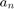 y 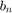 a quienes llamaremos coeficientes de Fourier, mismos que modearán las amplitudes del seno y coseno, respectivamente. Al variar estos coeficientes dentro de la sumatoria se logra aproximar la señal cada vez más. Esta aproximación cuenta con la siguiente estructura.
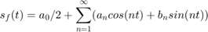
- Trigonométrica Compacta ; En ocasiones es más útil conocer la amplitud y la fase en términos cosinusoidales en lugar de amplitudes cosinusoidales y sinusoidal. Otra forma de expresar la compleja forma de la serie de Fourier. Esta aproximación cuenta con la siguiente estructura.
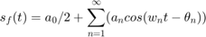
- Exponencial ; Esta serie a diferencia de las anteriores nos permite modelar expresiones tanto reales como imaginarias dadas sus características exponenciales.
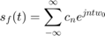
Donde en este caso especial los coeficientes de Fourier son llamados 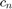$; los cuales se obtienen aplicando algunos despejes de la forma trigonométricas y finalmente se calculan de la siguiente manera
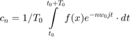
Como es posible apreciar en esta última ecuación el cálculo de $ está en función del elemento a calcular. Esto es que varía en función de n que es un parámetro dentro de la serie. Otra forma de encontrar los coeficientes de Fourier de forma numérica es a través de software. En el capítulo 6.6 del libro Continuous-Time Signal Analysis se mencionan algunos pasos para llegar a un método analítico
Aplicando sobre un intervalo de muestreo T con periodo 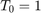 en la señal 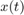 , tenemos que 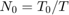 donde 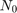 es el número de muestras en un periódo 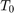$. Para encontrar la relación entre 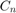 y consideramos la definición de los coeficientes de Fourier; donde al aplicarle límites en lugar de integrar se llega a las siguientes dos relaciones
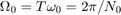
Cabe destacar en esta síntesis del método un concepto que traducido al español es llamado "Error de Solape"; el cuál es básicamente una aproximación cuando el límite de 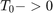 y se indetermina el límite. Para este caso el método numérico tiende a valores muy pequeños cercando al cero, pero nunca siendo cero. Ello implica que la Serie de Fourier tenga una ligera diferencia a la función original.
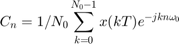
Aplicando las dos ultimas relaciones en la ecuación anterior, se tiene una nueva igualdad entre los valores de $
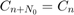
Conclusiones: La igualdad anterior establece una llamada propiedad de periocidad que significa que más allá de que 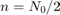$ n representa aquellos valores negativos. Por ejemplo si 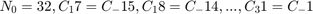 Y de esta manera el ciclo se repite desde 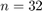
Se puede aprovechar la eficiencia de la FFT o Transformada Rápida de Fourier Por sus siglas en inglés; que es un algoritmo utilizado en matlab en el que solo se necasitan rampas sobre un periodo que inicie en 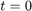, también es preferible que 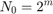
T_0 = pi; N_0 = 256; T = T_0/N_0; t = (0:T:T*(N_0-1))'; M = 10; x = exp(-t/2); x(1) = (exp(-pi/2) + 1)/2; D_n = fft (x)/N_0; n = -N_0/2:N_0/2-1'; clf; subplot (2, 2, 1); stem(n, abs(fftshift (D_n)),'k'); axis ([-M M -.1 .6]); xlabel('n'); ylabel('|D_n|'); subplot (2, 2, 2); stem(n, angle(fftshift(D_n)),'k'); axis([-M M -pi pi]); xlabel ('n'); ylabel('\angle D n [rad]')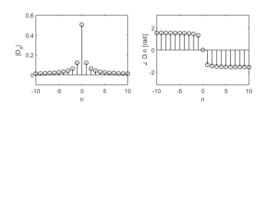
Desarrollo
1) Realizar el programa de la serie que se indica 2) Gráfica de la serie de Fourier en un intervalo que muestre 5 repeticiones 3) Gráfica de la señal y la serie de Fourier para 4 armonicos 4) Gráfica del error 5) Gráfica de la energía del error 6) Espectro de magnitud para 4 armonicos 7) Espectro de fase para 4 armonicos 8) Todo lo anterior para 15 armonicos
Ejemplo 6.1
Con serie y espectro trigonometrico, no es necesario entregar el código, solo la aplicación al problema especifico, debe de indicar la función y los valores de sus coeficientes (sin incluir el procedimiento) Utilizando el software visto en clase se define la función de la siguiente manera:
d0=0.504; dn=@(n) 0.504/(1+4*n*1j); t0=0; tf=pi; f=@(t) exp(-t/2); armo=4; a=-7; b=9; sfcon(t0,tf,dn,d0,f,armo,a,b)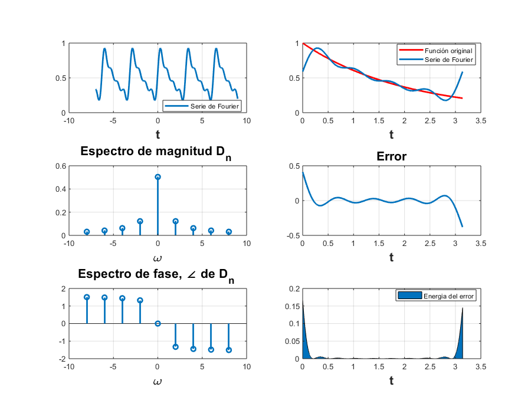
Ejemplo 6.2
Con serie y espectro exponencial y A=3, no es necesario entregar el código, solo la aplicación al problema especifico, debe de indicar la función y los valores de sus coeficientes (sin incluir el procedimiento)
d0=0.504;
dn=@(n) 0.504/(1+4*n*1j);
t0=0;
tf=pi;
f=@(t) (2-2*t).*(t>=1/2&t<3/2);
armo=4;
a=-7;
b=9;
sfcon(t0,tf,dn,d0,f,armo,a,b)
%
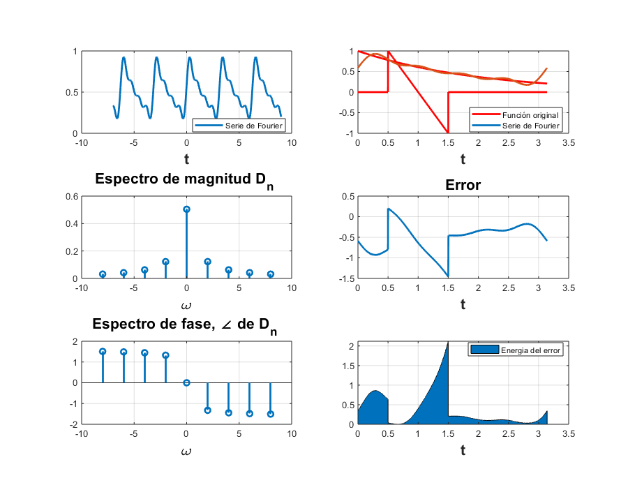 Ejemplo 6.4
Con serie y espectro exponencial, no es necesario entregar el código, solo la aplicación al problema especifico, debe de indicar la función y los valores de sus coeficientes (sin incluir el procedimiento)
d0=0.504; dn=@(n) 0.504/(1+4*n*1j); t0=0; tf=pi; f=@(t) 1.*(t>=-2*pi&t<2*pi); armo=4; a=-7; b=9; sfcon(t0,tf,dn,d0,f,armo,a,b) armo=15; sfcon(t0,tf,dn,d0,f,armo,a,b)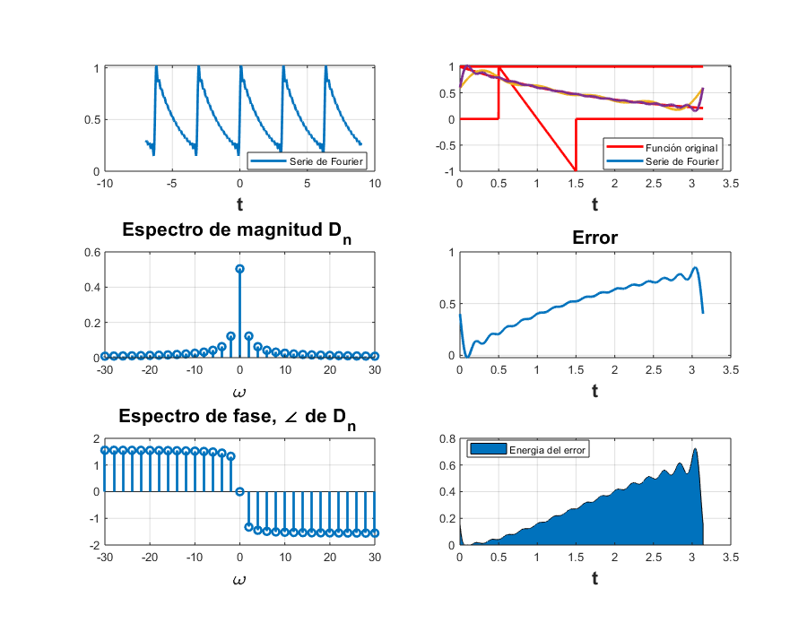
Ejercicio 6.5 (4 armonicos)
Datos para la función con 5 armonicos.
d0=0.504;
dn=@(n) 0.504/(1+4*n*1j);
t0=0;
tf=pi;
f=@(t) exp(-t/2);
armo=4;
a=-7;
b=9;
sfc(t0,tf,dn,d0,f,armo,a,b)
% Gráfica de la funcion Delta con 5 armonicos.
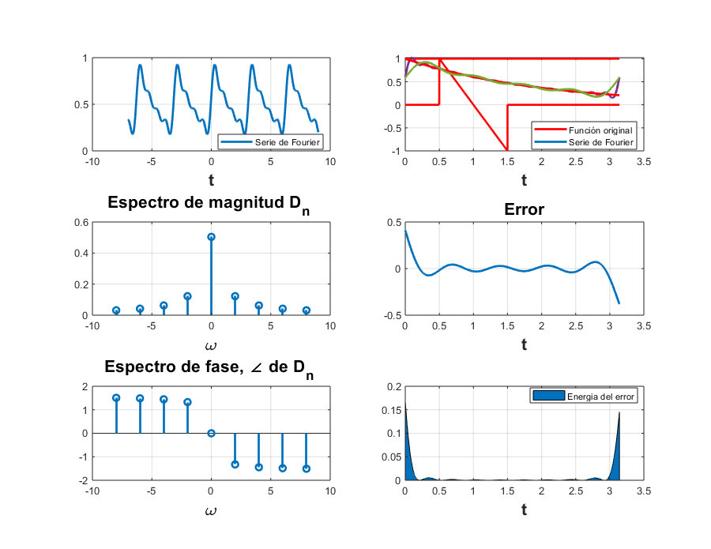 Ejercicio 6.5 (15 armonicos)
Datos para la función con 15 armonicos.
d0=0.504;
dn=@(n) 0.504/(1+4*n*1j);
t0=0;
tf=pi;
f=@(t) exp(-t/2);
armo=15;
a=-7;
b=9;
sfc(t0,tf,dn,d0,f,armo,a,b)
% Gráfica de la funcion Delta con 15 armonicos.
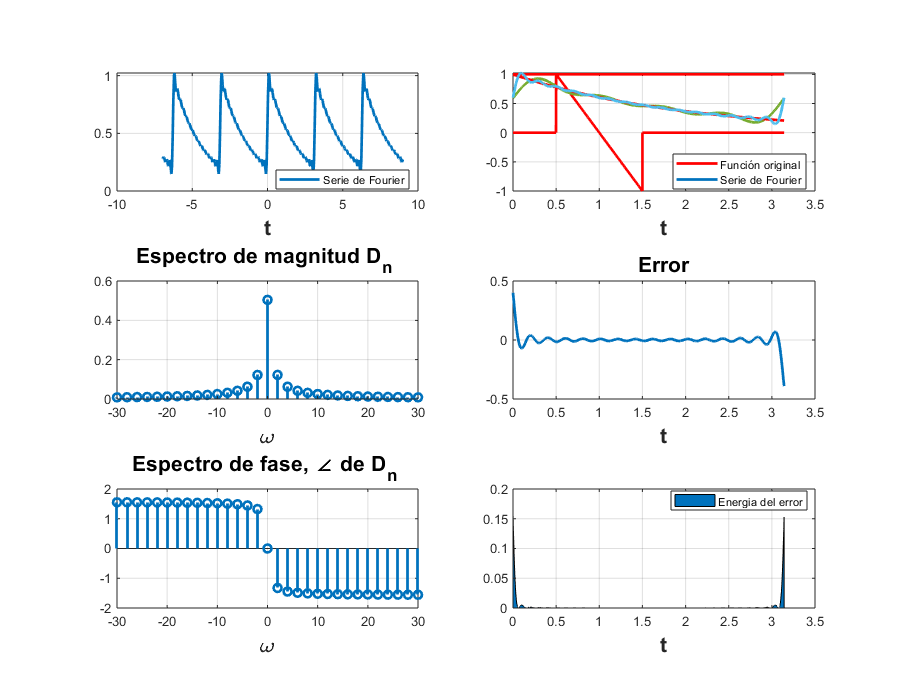 Ejercicio 6.7 (4 armonicos)
Datos de la funcion Delta con 5 armonicos.
close all; clear; clc; ar=4; sef=1/3; t0=3; t=-4:4; for i=1:ar sef=sef+exp(2*pi*i*t*1j/3)/3+ exp(-2*pi*i*t.*1j/3)/3; end for i=1:length(t) dn(i)=1/3; On(i)=0; if i==length(t) On(2)=pi; On(8)=-pi; end end figure subplot(3,1,1,'Color',[0,0.7,0.9]) stem(t,sef,'LineWidth',2,'Color',[1 0 0]) grid on legend('Serie de Fourier','Location','Best') xlabel('Serie de Fourier.','FontWeight','bold','FontSize',16) axis([-4.5 4.5 0 14]) subplot(3,1,2) stem(t,dn,'LineWidth',2,'Color',[0 0 1]) grid on legend('Espectro de magnitud','Location','Best') xlabel('Espectro de Fase.','FontWeight','bold','FontSize',16) subplot(3,1,3) stem(t,On,'LineWidth',2,'Color',[0 0 1]) grid on legend('Espectro de fase','Location','Best') xlabel('Espectro de Magnitud.','FontWeight','bold','FontSize',16) %Gráfica de la funcion Delta con 5 armonicos.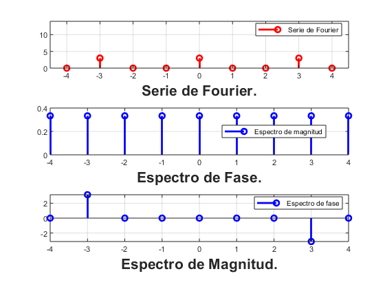
Ejercicio 6.7 (15 armonicos)
Datos de la funcion Delta con 15 armonicos.
close all; clear; clc; ar=15; sef=1/3; t0=3; t=-4:4; for i=1:ar sef=sef+exp(2*pi*i*t*1j/3)/3+ exp(-2*pi*i*t.*1j/3)/3; end for i=1:length(t) dn(i)=1/3; On(i)=0; if i==length(t) On(2)=pi; On(8)=-pi; end end figure subplot(3,1,1,'Color',[0,0.7,0.9]) stem(t,sef,'LineWidth',2,'Color',[1 0 0]) grid on legend('Serie de Fourier','Location','Best') xlabel('Serie de Fourier.','FontWeight','bold','FontSize',16) axis([-4.5 4.5 0 14]) subplot(3,1,2) stem(t,dn,'LineWidth',2,'Color',[0 0 1]) grid on legend('Espectro de magnitud','Location','Best') xlabel('Espectro de Fase.','FontWeight','bold','FontSize',16) subplot(3,1,3) stem(t,On,'LineWidth',2,'Color',[0 0 1]) grid on legend('Espectro de fase','Location','Best') xlabel('Espectro de Magnitud.','FontWeight','bold','FontSize',16) %Gráfica de la funcion Delta con 15 armonicos.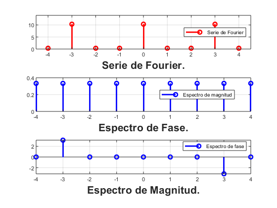
Trapecio Compuesto
Elabore un código que implemente el algoritmo de trapecio compuesto para 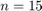, Utilice este código para aproximar 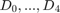 del ejemplo de la práctica. Ahora implemente el código COMPUTER EXAMPLE C6.4 que se encuentra al final de la sección 6.6 de Lathi, y calcule nuevamente el los coeficientes del ejemplo propuesto. Muestre una tabla que contenga los coeficientes mencionados calculados con los dos algorit- mos y de forma exacta, ¿Qué algortmo aproxima mejor a los coeficientes?, para esto compare los coefientes con el valor absoluto de la resta.
function integral=trapeciocom(f,a,b,n) f0=subs(f,a); fn=subs(f,b); h=(b-a)/n; fs=0; for i=1:n-1 x(i)=a+h*i; fs=fs+subs(f,x(i)); end integral=0.5*h*(f0+2*fs+fn);
f=exp(-t/2); a=0; b=pi; n=15; trapeciocom(f,a,b,n); Integral=1.5857;
Tabla del trapecio compuesto
Dn = {'D0';'D1';'D2';'D3';'D4'};
Real = [0.504;0.0296 - 0.1186i;0.0078 - 0.0620i;0.0035 - 0.0417i;0.0020 - 0.0314i];
Trapecio = [0.5047+0.0000i;0.0301-0.1168i;0.0082-0.0583i;0.0040-0.0361i;0.0025-0.0237i];
Lathi = [0.504281105948516 + 0.00000000000000i;0.0296650836043681 - 0.118647676913452i;0.00775972886772522 - 0.0620525144086751i;0.00347937240545304 - 0.0417144902523740i;0.00196376005535414 - 0.0313695156147827i];
TrapeciovsReal = abs(Real-Trapecio);
LathivsReal = abs(Real-Lathi);
T=table(Dn,Real,Trapecio,Lathi,TrapeciovsReal,LathivsReal)
T =
5×6 table
Dn Real Trapecio Lathi TrapeciovsReal LathivsReal
____ ______________ ______________ ___________________ ______________ ___________
'D0' 0.504+0i 0.5047+0i 0.50428+0i 0.0007 0.00028111
'D1' 0.0296-0.1186i 0.0301-0.1168i 0.029665-0.11865i 0.0018682 8.0678e-05
'D2' 0.0078-0.062i 0.0082-0.0583i 0.0077597-0.062053i 0.0037216 6.6178e-05
'D3' 0.0035-0.0417i 0.004-0.0361i 0.0034794-0.041714i 0.0056223 2.5208e-05
'D4' 0.002-0.0314i 0.0025-0.0237i 0.0019638-0.03137i 0.0077162 4.7356e-05
Dn Real Trapecio Lathi TrapeciovsReal LathivsReal
____ ______________ ______________ ___________________ ______________ ___________ 'D0' 0.504+0i 0.5047+0i 0.50428+0i 0.0007 0.00028111
'D1' 0.0296-0.1186i 0.0301-0.1168i 0.029665-0.11865i 0.0018682 8.0678e-05
'D2' 0.0078-0.062i 0.0082-0.0583i 0.0077597-0.062053i 0.0037216 6.6178e-05
'D3' 0.0035-0.0417i 0.004-0.0361i 0.0034794-0.041714i 0.0056223 2.5208e-05
'D4' 0.002-0.0314i 0.0025-0.0237i 0.0019638-0.03137i 0.0077162 4.7356e-05Apendice.
https://drive.google.com/drive/folders/1dyDRoMeOjE3B5XLxarQ4itmvqw5a8p4c?usp=sharing
Referencias
Dr. Rafael Martinez Martinez. (2016). Se ?nales y Sistemas. 2018, de creativecommons.orgSitio web: http://rafneta.github.io/
B P Lathi. (2005). Continuous-Time Signal Analysis-The Fourier Series. En Linear Systems and Signals(448-449). New York: Oxford University Press, Inc. .